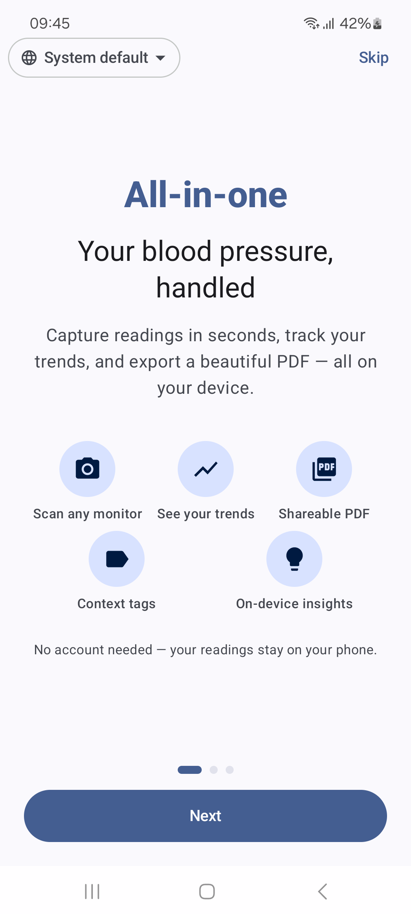
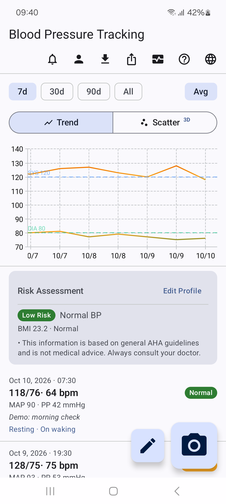
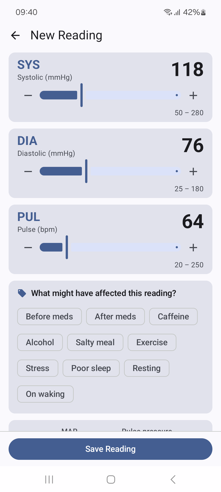
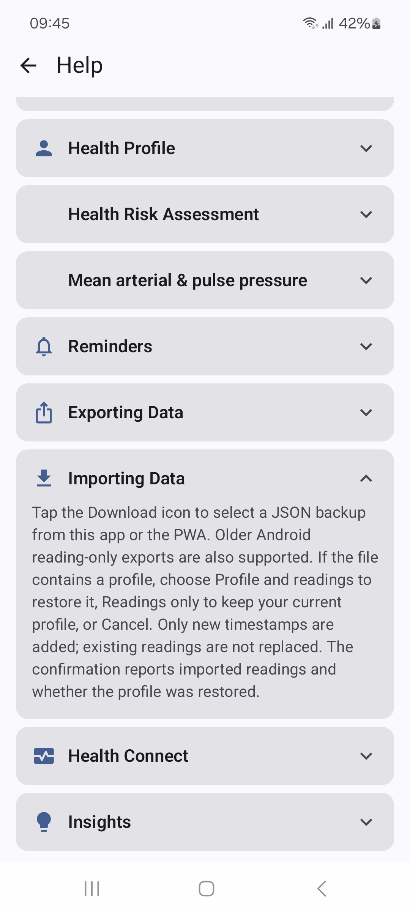
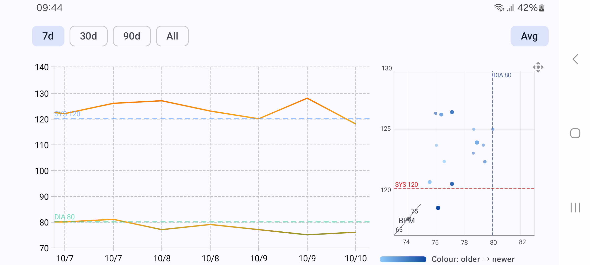

BP Digitizer 1.6.2 screenshots
Welcome1080 × 2400 · PNG

Weekly trends and demo history1080 × 2400 · PNG
 90-day 3D scatter1080 × 2400 · PNG
90-day 3D scatter1080 × 2400 · PNG

Reading entry and context tags1080 × 2400 · PNG
 Health profile1080 × 2400 · PNG
Health profile1080 × 2400 · PNG
 Daily reminders1080 × 2400 · PNG
Daily reminders1080 × 2400 · PNG
 JSON, CSV and PDF export1080 × 2400 · PNG
JSON, CSV and PDF export1080 × 2400 · PNG

Profile and reading backups1080 × 2400 · PNG
 Offline camera scanning1080 × 2400 · PNG
Offline camera scanning1080 × 2400 · PNG

Landscape charts2400 × 1080 · PNG